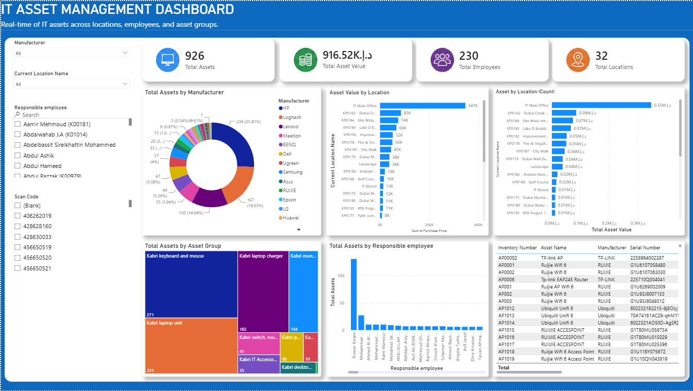
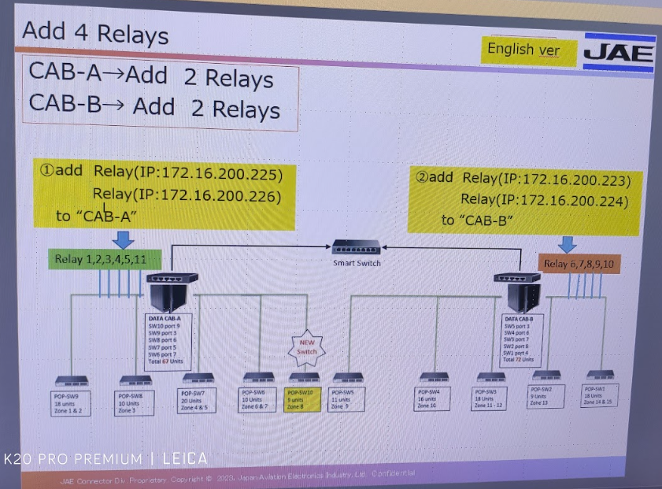
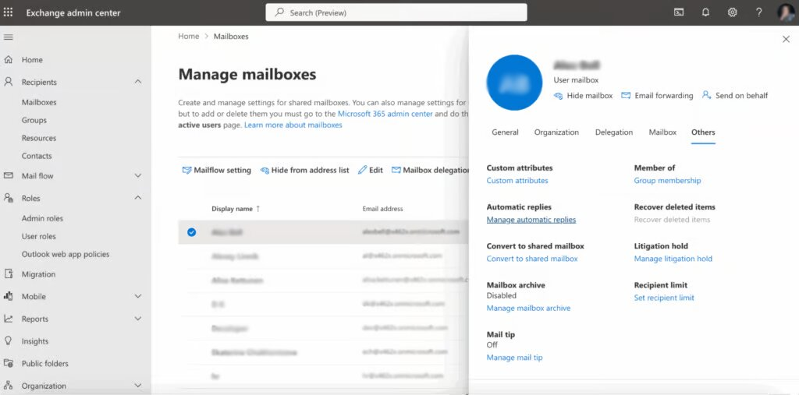
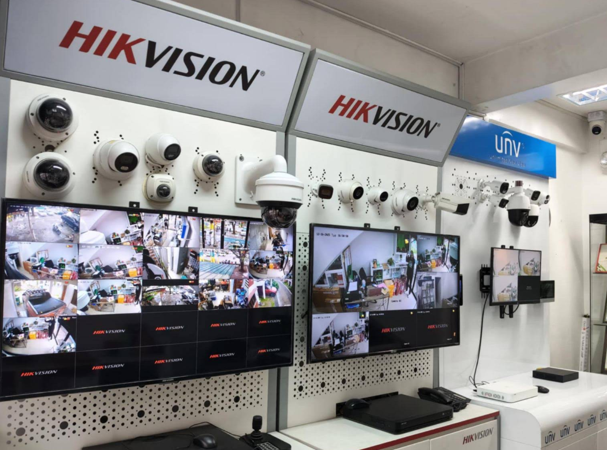

Building reliable IT infrastructure and creating data-driven solutions.
View My Projects Download ResumeYears of IT Experience
Professional Certifications & Training
Companies Supported
Commitment to Technical Support
IT Support Specialist with 6+ years of experience providing enterprise IT support, network administration, Microsoft 365 management, hardware deployment, and infrastructure maintenance. Experienced in supporting corporate clients, troubleshooting complex technical issues, and building Power BI dashboards that improve operational efficiency. Passionate about delivering reliable technology solutions and continuously learning new IT skills.
• Onsite IT Support
• Microsoft 365 Administration
• Computer Deployment
• Printer Configuration
• Network Troubleshooting
• Server Administration
• Switch & Router Configuration
• Preventive Maintenance
• Network Cabling
• User Support
• CCTV Installation
• Workstation Deployment
• Technical Support
• Client Site Planning
• Inspecting deliveries to ensure they match order and invoice criteria.
• Receiving and signing for deliveries.
• Unloading deliveries from trucks.
• Maintaining records of orders, delivery details, etc.
I provide reliable IT solutions, from end-user support to network infrastructure, Microsoft 365 administration, and business intelligence reporting.
Hardware & software troubleshooting, workstation deployment, printer installation, and end-user technical support.
Network cabling, switch configuration, router setup, LAN troubleshooting, and preventive maintenance.
User account creation, OneDrive setup, email configuration, shared folders, and cloud administration.
Interactive dashboards, Excel reporting, KPI visualization, and business analytics.
Windows Server support, system maintenance, hardware monitoring, and infrastructure management.
CCTV installation, DVR/NVR configuration, system testing, and client support.
Technologies, platforms, and software I use to deliver reliable IT solutions.
I believe excellent IT support goes beyond solving technical issues. It means delivering reliable solutions, communicating effectively, protecting business systems, and continuously improving through learning and innovation.
The software, platforms, and technologies I use to support enterprise IT environments.
Beyond technical expertise, I value communication, collaboration, and delivering reliable IT solutions that help users work efficiently.
Explaining technical issues clearly to users and collaborating effectively with teams.
Diagnosing technical issues and identifying practical, long-term solutions.
Working closely with colleagues, vendors, and end users to achieve project goals.
Creating clear documentation, service reports, and technical procedures.
Prioritizing support requests and completing tasks efficiently.
Providing professional and friendly support while maintaining high service quality.
A selection of projects demonstrating my experience in IT support, networking, Microsoft 365, and business intelligence.


Configured switches, routers, network printers, and performed troubleshooting for enterprise users.

Managed user onboarding, OneDrive, email configuration, and shared folders.

Installed CCTV systems, DVR/NVR devices, structured cabling, and client support.
Professional certifications and technical training that strengthen my expertise in IT support, networking, and business intelligence.
Connecting Power BI to data source, Data Preparation, Data Modeling & Dashboard Design.
Environmental Management System auditing and compliance.
Data protection, privacy regulations, and information security.
Problem-solving techniques for identifying and preventing issues.
Importance of OSH, Health & Safety Hazards Identification and Control, Workplace Emergency Preparedness, Administrative OSH Requirements & Medical Surveillance.
Installation, troubleshooting, maintenance, and configuration.
Initial Setup & System Admin, Network & Interfaces, Firewall Policies & NAT, Security Profiles and User Authentication.
Hardware Overview, System Programming (PCPro / WebPro), Trunks and Extensions, Class of Service (CoS), System Numbering Plan and Routing and Auto Attendant.
Basic Telephone Operation, Call Handling, Voicemail Setup, Programmable/One-Touch Keys and System Administration.
Industry-standard B2B sales skills, NEC products familiarizing and NEC Procurement Strategies
I'm currently open to IT Support, Network Engineering, System Administration, and Power BI opportunities. Feel free to reach out if you'd like to discuss a project or career opportunity.